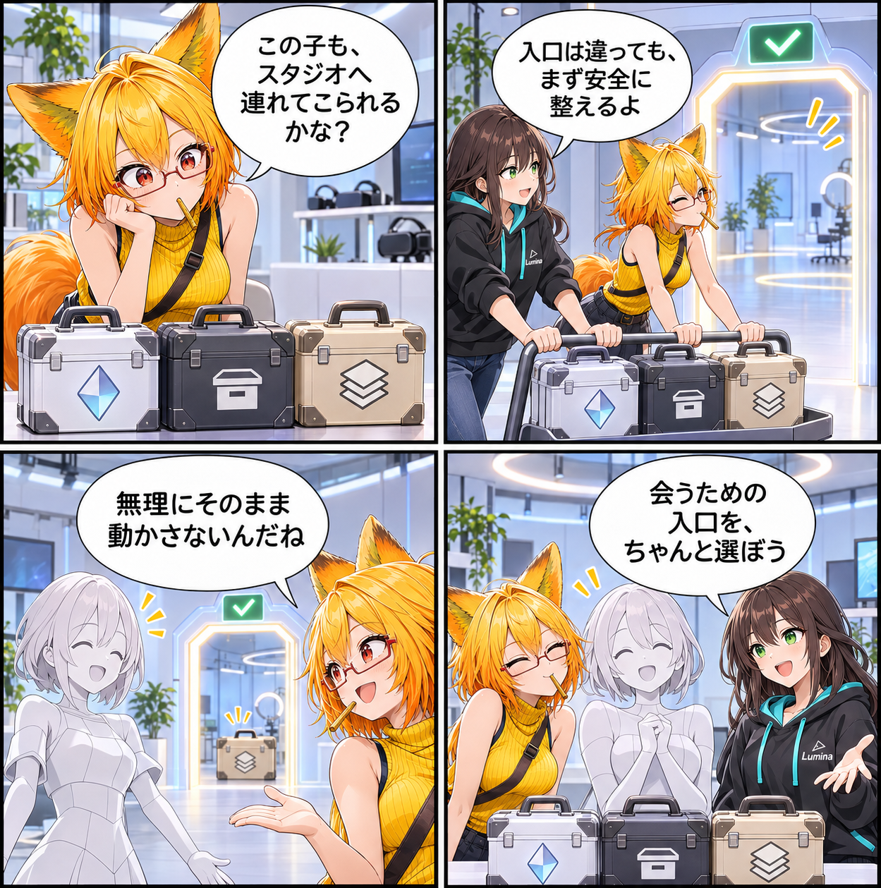

2026.11.21 / Development Log / Feature Spotlight
閑話休題：アバターを迎える、最初の入口
新規実装の報告ではなく、VRASに既にあるアバター読込の入口を紹介します。形式ごとの違いをそのまま実行するのではなく、扱える形へ整えてからスタジオへ迎える仕組みです。
今回は feature-spotlight（機能紹介） です。集計期間は2026-11-20 03:00:00 JSTから2026-11-21 02:59:59 JSTまで、対象はViewerの
main です。集計終了時点のHEADは c33733a41be121b814a1732df8c9eae089ace2ea、期間内コミットは0件でした。Assets/Scenes/MainScene.unity の未コミット差分は、期間内に実装された事実を確定できないため実績には含めていません。
いろいろなアバターを、ひとつのスタジオへ
VRASは、一般的な .vrm と独自の .vab を直接読み込めます。FBX、GLB、PMX、UnityPackage、Prefab、Unity Sceneは取り込み対象として扱い、必要に応じてVAB 4系へ正規化します。
まずは安全に、使える形へ
Windows Playerの取り込みでは、元のUnityPackageからC#、DLL、任意のUnity ComponentやShaderを実行しません。静的なAssetを読み取り、VRASで扱える範囲へ変換する設計です。
入口ごとに、できることは違う
これは完全なUnity Scene再生ではなく、すべてのアバターや入力形式で同じ再現を約束するものでもありません。無理にそのまま動かすのではなく、対応範囲を保ちながらスタジオへ迎えます。
4コマの話
ろひは「この子も連れてこられるかな」とアバターの箱を前に迷い、ルミナと一緒に「入口は違っても、会うために整える」という役割を見つけます。
まとめ
VRASはVRM／VABを直接読み込み、他の対応入力は安全な取り込み経路で扱います。形式ごとの差を隠すのではなく、無理に実行しない境界を保ちながら、アバターをスタジオへ迎えます。